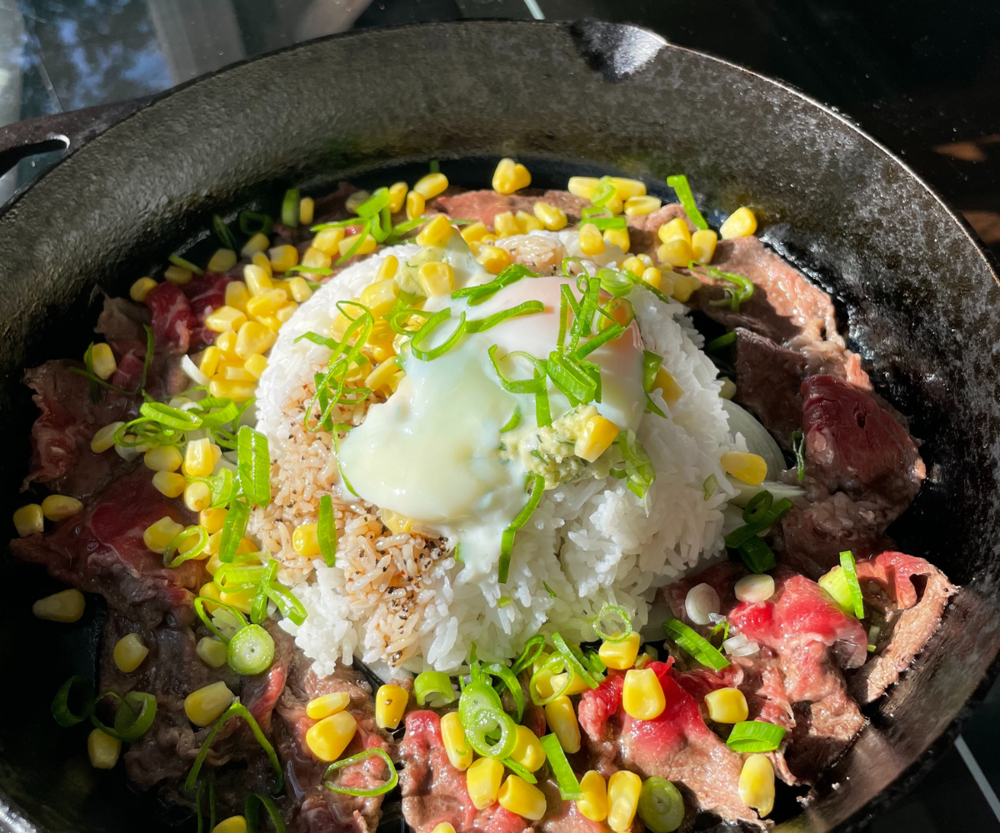

Beef Pepper Lunch Recipe

Description
If you have ever been to Asia, you might have heard of a popular fast food chain called pepper lunch. That is the place that popularized this beef pepper rice. It’s very simple, just sliced beef, rice, corn, green onion, and a sweet & salty sauce to go with it served on a sizzling hot plate.
Ingredients
- 1 lbs thinly sliced ribeye
- 2 cups cooked rice
- 1 cup frozen corn kernels
- 2 stalks green onion
- 1 yellow onion
- 2 tbsp soy sauce
- 1 tbsp oyster sauce
- 2 tbsp honey
- 1 tsp black pepper
- 1 tsp sesame oil
- 2 tbsp butter
Steps
- Prepare your ingredients by first soaking your frozen corn kernels in hot water for 10 seconds and thinly slicing your onion and green onion.
- Pre-mix the sauce.
- Heat up your cast-iron pan over high heat then add 1 tbsp of oil.
- Place sliced onions in the middle of the pan then begin to place the sliced beef along the side of the pan
- Add your rice on top of the onions and add the sauce on top.
- Add butter, corn, green onions, egg (optional), and mix everything together unitl combined.
Reference:
Kwokspots Beef Pepper Rice